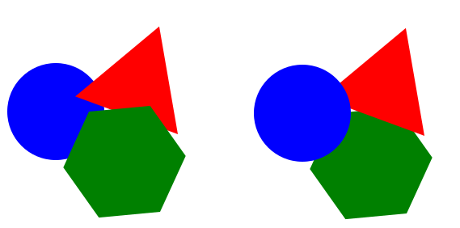
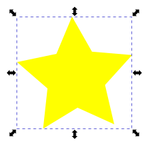
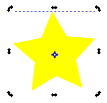

Обрада векторске графике¶

- На овом часу научићеш:
да промениш редослед векторских објеката;
да извршиш основне oперације над објектима (померање, промена величине, ротирање…);
шта је векторизација и како да урадиш векторизацију растерске слике.
На претходна два часа смо креирали, тачније исцртавали различите геометријске облике (правоугаоник, квадрат, елипсу, праву линију, изломљену линију, спиралу…). Сви ти објекти на страници не морају да буду постављени у истој равни (један поред другог), већ можеш да их стављаш један преко другог. У задацима из претходне лекције си могао/могла да приметиш како изгледају објекти који се преклапају.
Објекти на векторској слици су поређани по нивоима, тако да се сваки нови објекат налази на нивоу изнад претходног. Редослед ових нивоа (па самим тим и редослед објеката на слици) се може променити.
{kind=link}
У програму Inkscape могуће је променити редослед означених објеката коришћењем опција из менија Object:
Raise да се објекат подигне за један ниво горе;
да се објекат подигне за један ниво горе;Lower да се објекат спусти за један ниво доле;
да се објекат спусти за један ниво доле;Raise to Top да се објекат подигне на врх;
да се објекат подигне на врх;Lower to Bottom да се објекат спусти на дно.
да се објекат спусти на дно.
Опис поступка за мењање редоследа објеката у програму Inkscape можеш погледати на следећем видеу:

Операције над објектима¶
За манипулацију објектима (померање, промена величине, ротација…) користиш алатку Selector  .
.
Када кликнеш на објекат користећи алатку за означавање (селекцију), око њега се формира оквир са 8 двостраних стрелица. Овакав објекат је спреман за све врсте манипулација (померање, мењање величине, ротирање…).
Померање објеката¶
Објекат можеш да помераш само када је селектован, и то превлачењем миша или употребом стрелица на тастатури. Притиском стрелица на тастатури објекат се помера у жељеном смеру за 2 пиксела. Уколико држиш притиснут тастер Shift и стрелице на тастатури, померање је 10 пута веће (20 пиксела).
Опис поступка за померање објекта у програму Inkscape можеш погледати на следећем видеу:
Промена величине објеката¶
Величину објекта мењаш кликом и повлачењем на одговарајуће двостране стрелице. Ширину или висину селектованог објекта мењаш кликом на двостране стрелице које су на средини страница оквира селектованог објекта и њиховим повлачењем. Ако кликнеш на двостране стрелице у угловима селектованог објекта, истовремено мењаш и ширину и његову висину. Пропорцију објекта, односно исти однос ширине и висине можеш да задржиш тако што током промене величине објекта држимо притиснут тастер Ctrl.
Опис поступка за промену величине објекта у програму Inkscape можеш погледати на следећем видеу:
Ротирање и искошавање објеката¶
Да би се објекат могао ротирати или искосити, треба да кликнеш на селектовани објекат, чиме двостране стрелице мењају облик. На првој слици је приказан селектован објекат, а на другој је приказан изглед стрелица након што се кликне на селектовани објекат.
 {kind=link}
{kind=link}
Објекат ротираш повлачењем одговарајуће двостране стрелице којa се налази на углу селектованог објекта.
Објекат можеш искосити вертикално повлачењем двостране стрелице која се налази на средини усправне странице оквира селектованог објекта (са леве и десне стране).
Објекат можеш искосити хоризонтално повлачењем двостране стрелице која се налази на средини водоравне странице оквира селектованог објекта (горе и доле).
Опис поступка за ротирање и искошавање објекта у програму Inkscape можеш погледати на следећем видеу:
Вишеструка селекција¶
У програму Inscape можеш да селектујеш више објеката, како би се на њима извршиле исте операције. Да
селектујеш више објеката, потребно је да држиш притиснут тастер Shift и кликнеш на сваки од објеката.
Број објеката које можеш да селектујеш на овај начин није ограничен. Ако желиш да селектујеш све објекте
на страници, то радиш комбинацијом тастера Ctrl + A.
Опис поступка за вишеструку селекцију објекта у програму Inkscape можеш погледати на следећем видеу:
За прецизнију манипулацију над селектованим објектима користиш линију за контролу алатки

или опцију Transform, која се налази у менију Object (Object → Transform).
Уређивање објеката¶
Када поставиш објекат на страницу можеш да модификујеш, тачније, да мењаш његов облик.
То радиш тако што из кутије са алаткама Toolbox одабереш алатку Edit paths by nodes  и кликнеш
на објекат који модификујеш. Приказаће нам се чворови беле боје. Њиховим повлачењем мењаш изглед делова
објекта.
и кликнеш
на објекат који модификујеш. Приказаће нам се чворови беле боје. Њиховим повлачењем мењаш изглед делова
објекта.
За промену броја углова и додавање нових чворова на објекту, неопходно је да објекте претвориш у путање
(Path). То чиниш тако што селектујеш објекат и из менија Path бираш опцију Object to Path.
{kind=link}
Када је објекат претворен у путању, на располагању су ти 4 различите врсте чворова:
cusp- угаони чворови који су намењени за креирање оштрих углова;smooth- намењен за креирање глатких кривих;symmetric- намењен за креирање кривих;auto-smooth- за креирање идеално глатких кривих.
За подешавање одговарајуће врсте чвора потребно је да кликнеш на постојећи чвор, а затим да одабереш
једну од опција:  , које се налазе у Линији за контролу алатки. Објекат мењаш тако што повлачиш бели
круг одговарајућег чвора.
, које се налазе у Линији за контролу алатки. Објекат мењаш тако што повлачиш бели
круг одговарајућег чвора.
За додавање новог чвора довољно је да два пута кликнеш (двоклик) на жељено место на објекту. За брисање
чвора потребно је да га означиш, а затим притиснеш тастер Delete. За додавање и брисање чворова можеш
да користимо и опцију  са Линије за контролу алатки.
са Линије за контролу алатки.
Опис поступка за додавање и брисање чвора на објекту у програму Inkscape можеш погледати на следећем видеу:
Комбиновање објеката¶
У програму Inkscape могуће је креирати објекат уклањањем једног или више постојећих објеката, тачније могуће је извршити комбиновање више објеката креирајући потпуно нов објекат.
Објекте комбинујемо тако што превучемо један објекат преко другог, селектујемо оба и изаберемо начин комбиновања (Union, Difference, Intersection, Exclusion, Divison, Cut Path) из менија Path.
{kind=link}
Опис поступка за комбиновање објеката у програму Inkscape можеш погледати на следећем видеу:
Копирање и брисање објекта¶
У програму Inkscape селектовани објекат можеш да копираш на више начина:
коришћењем стандардних пречица са тастатуре (
Ctrl+C,Ctrl+V);десним кликом миша на објекат и одабиром из падајућег менија наредбе
CopyиPaste;избором пречица (
Copy ,
, Paste ) из Командне линије.
) из Командне линије.
Поред горе описаног начина копирања објеката у програму Inkscape могуће је извршити копирање и помоћу опција Duplicate  и
и Clone  из Командне линије.
из Командне линије.
Применом ових опција копирани објекти се појављују преко постојећих објеката, па их је потребно померити на жељену позицију.
Опис поступка за копирање објеката у програму Inkscape можеш погледати на следећем видеу:
Када селектујемо објекат и притиснемо тастер Delete, бришемо објекат са радне површине.
Опис поступка за брисање објеката у програму Inkscape можеш погледати на следећем видеу:
Поравнање објеката¶
Објекте можеш прецизно да поравнаш на два начина:
употребом помоћних линија (мреже) или
опцијом
Align and distribute objectsиз менија Object, до које се може доћи и помоћу пречице на тастатуриShift+Ctrl+A.
Ова опција отвара палету у којој се налазе опције за поравнање објеката (Align) и усклађивање размака (Distribute) између објеката.
{kind=link}
Опис поступка за поравнавање објеката у програму Inkscape можеш погледати на следећем видеу:
Симетрично пресликавање¶
За симетрично пресликавање објеката користиш опцију Path Effects из менија Path. Објекат треба
да буде селектован да би се симетрично пресликао. Након избора опције Path Effects отвара се палета
у којој треба кликнути на опцију  . Отвара се додатни прозор у којем бираш опцију
. Отвара се додатни прозор у којем бираш опцију Mirror symmetry.
{kind=link}
Након избора ове опције у палети Path Effects налазе се опције којима се подешава:
Mode- начин рада, односно пресликавања;Mirror line start- почетне координате осе симетрије у односу на које се врши пресликавање;Mirror line end- крајње координате осе симетрије у односу на које се врши пресликавање;Mirror symmetry- избор ефекта.
{kind=link}
Опис поступка за симетрично пресликавање у програму Inkscape можеш погледати на следећем видеу:
Груписање и разлагање објеката¶
Више објеката на страници може да формира једну групу, тако да се са њима може истовремено манипулисати. Таква група делује као један објекат. За разлику од комбинованих објеката, груписани објекти се по потреби поново могу раздвојити и посебно уређивати.
Групу формираш од селектованих објеката кликом на опцију Group selected objects  из Командне линије.
Групу разлажеш на појединачне објекте кликом на опцију
из Командне линије.
Групу разлажеш на појединачне објекте кликом на опцију Ungroup selected groups  . Опције за груписање објеката доступне су и у менију Object.
. Опције за груписање објеката доступне су и у менију Object.
Опис поступка за груписање и растављање објеката у програму Inkscape можеш погледати на следећем видеу:
Промена боје објекта¶
Сваки објекат у програму Inkscape је дефинисан унутрашњом облашћу (Fill) и ивицом (Stroke).
Унутрашњој области и ивицама можеш независно да мењаш боју. Промену боје унутрашње области или ивице
селектованог објекта (или групе објеката) вршиш избором жељене боје из палете боја.
{kind=link}
Кликом на боју поред назива Fill: и Stroke: отвара се палета Fill and Stroke у коjoj се врше детаљна подешавања изгледа унутрашње области и ивице објекта.
{kind=link}
Палету Fill and Stroke можеш да покренеш и из менија Object (Object → Fill and Stroke).
Опис поступка за промену боје објеката у програму Inkscape можеш погледати на следећем видеу:
За чување документа креираних у програму Inkscape користи се опција Save, односно Save As, из менија File. На овај начин пројекат ће бити сачуван у .svg формату и може се поново отворити и уређивати у програму Inkscape. Уколико је рад на пројекту завршен, слика се може извести у .png формат помоћу опције Export која се такође налази у менију File.
Поступак чувања у програму Inkscape можеш да погледаш на следећем видеу:
Векторизација растерске слике¶
Процес којим растерску фотографију/слику претвараш у векторски цртеж, графички формат који не губи квалитет приликом увећавања, назива се векторизација.
У програму Inkscape могуће је претварање растерске слике у векторску коришћењем опције Trace Bitmap (Path → Trace Bitmap).
Избором већег броја скенирања (Scans) и избором из листе више боја (Colors) добија се квалитетнија векторска слика.
Поступак векторизације слике у програму Inkscape можеш да погледаш на следећем видеу:
Шта смо научили?
објектима је могуће променити редослед на страници коришћењем наредби: подигни (
Raise), спусти (Lower), подигни на врх (Raise to Top), спусти на дно (Lower to Bottom) из менија Object;поред селекције, померања и ротирања, објекте можемш да копираш, групишеш, поравнаваш, мењаш им боју или провидност и на тај начин додатно уређујеш векторску графику;
за симетрично пресликавање објеката користиш опцију
Path Effectsиз менија Path;више објеката на страници може формирати једну групу. Када су објекти у групи, њима се може истовремено манипулисати (премештати, копирати, мењати боју…);
векторизација је процес претварања растерске фотографије/слике у векторски цртеж.